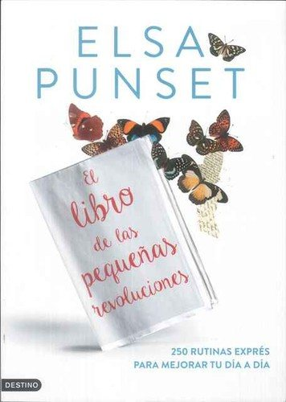

El libro de las pequeñas revolucionesElsa Punset

El libro de las pequeñas revoluciones
Elsa Punset
Propuestas breves y concretas, basadas en investigación, para mejorar el día a día emocional con pequeños cambios.
- Publicado originalmente
- 2013
- Enfoque
- Desarrollo personal con base científica
- Para quién
- Público general
- Ficha bibliográfica
- Open Library
Este libro tiene derechos de autor, así que no lo alojamos. Te dejamos la ficha para que sepas de qué trata y lo busques en una librería o biblioteca.
Hábitos, disciplina y modificación de conductaCambio de hábitosEmociones y regulación emocionalRegulación emocional